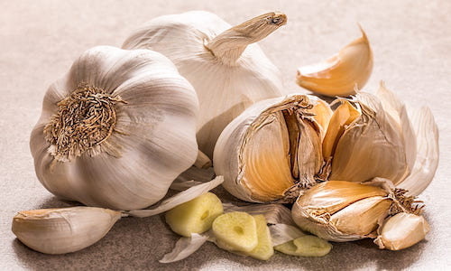

Wondering how to improve the nutritional value of food without any extra effort? All this hack takes is 10 minutes forethought. TLDR: The short answer is that you should always chop your garlic 10 minutes before you are going to fry/bake or sauté your garlic. If you want to read the science then keep reading… Raw garlic contains the raw ingredients that are needed to make allicin it’s most active ingredient but not the compound itself. Allicin is created when a sulfoxide compound call alliin and an enzyme called alliinase are mixed together. This only happens when you crush or slice the garlic and disrupt the barriers between them as they are present in different parts of the plant. Heating garlic immediately after crushing or slicing destroys the heat-sensitive enzyme that triggers the reaction. Whilst you can chop or slice your garlic a garlic press is best for intermarrying the alliin and alliinase and to maximize the production of allicin. Why would you want to maximize your allicin? Benefits have been found to include a protective effect on cardiovascular health, protecting the brain as well as lowering oxidative stress and inflammatory reactions as well naturally fighting infections and cancer. So next time you are making garlic bread, spaghetti bolognese or that amazing stir fry that calls for you to cook with garlic, make sure you prep your garlic first and leave it to rest for 10 minutes. Then chop and prep the rest of the food to be cooked and by the time your ready to bake, stir fry or sauté the magic will have already happened. References: Eating on the Wild Side by Jo Robinson, Little Brown, and Company, June 2013 (pg. 51) Song, K., and Milner, J.A. 2001. ‘The Influence of Heating on the Anticancer Properties of Garlic’ Journal of Nutrition 131: 1054S-57S.


A quick and easy hack to boost the nutrient firepower of garlic
Sunday, Apr 5, 2020
comments powered by Disqus